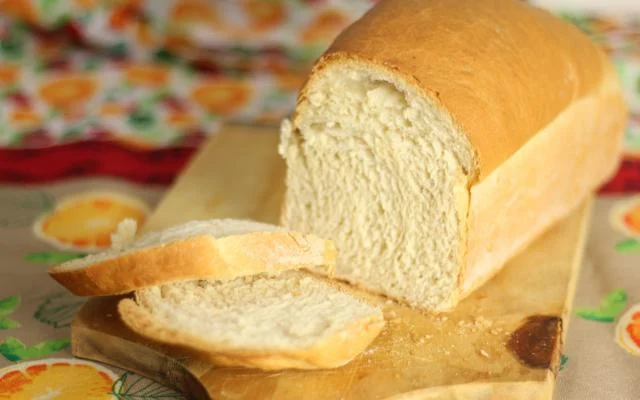

Em uma tigela, dissolva o fermento no açúcar e acrescente o sal, os ingredientes líquidos, os ovos e misture muito bem. Acrescente aos poucos a farinha até formar uma massa macia e sove bem a massa.
Deixe a massa descansar por aproximadamente 1 hora. Após o crescimento, divida a massa, enrole da forma que desejar, coloque nas formas e deixe crescer até dobrar de volume.
Leve para assar em forno médio (200° C), preaquecido, por aproximadamente 30 minutos. Retire o pão do forno e pincele leite para a casca ficar mais macia.
Coloque metade do leite em uma panelinha e leve ao fogo alto até que comece a ferver. Retire do fogo, junte a manteiga e o açúcar e misture até a manteiga derreter. Acrescente o leite restante e aguarde a mistura ficar morna para despejá-la na tigela de uma batedeira planetária (ou numa tigela grande, caso você vá sovar a massa à mão). Junte o fermento biológico, misture bem com um garfo para dissolvê-lo e aguarde uns 5 minutos ou até que a mistura espume.
Junte os ovos, a farinha e o sal e trabalhe a massa com o batedor em formato de gancho por cerca de 8 minutos (velocidade baixa) ou até obter uma massa lisa e macia – ou sove na mão por uns 10-12 minutos. Transfira a massa para uma tigela grande com um pouquinho de manteiga derretida no fundo. Gire a massa até que toda a sua superfície, bem como a superfície interna da tigela, fiquem untadas. Cubra com filme plástico e deixe crescer em um lugar morninho até dobrar de volume, uns 40 minutos. Nesse meio tempo, unte com manteiga uma forma de metal de 20 x 30 cm e reserve.
Dê um soquinho na massa para retirar o ar, divida-a em 15 porções de 75 g, cada, e forme uma bolinha com cada porção. Arrume as bolinhas de massa na forma previamente preparada, umas ao lado das outras, deixando 1 cm de distância entre elas. Cubra com um pano de prato limpo e seco e deixe crescer novamente, cerca de 40 minutos – enquanto isso, preaqueça o forno a 200°C.
Em uma tigelinha, bata o ovo e o leite juntos. Pincele os pãezinhos com a mistura e leve ao forno por 20-25 minutos ou até que dourem bem e, ao dar batidinhas neles com os nós dos dedos, o som seja de algo oco. Deixe esfriar na forma, sobre uma gradinha, por 5 minutos. Desenforme com cuidado sobre a gradinha e deixe esfriar. Sirva os pãezinhos mornos ou em temperatura ambiente.
Volte a pagina inicial